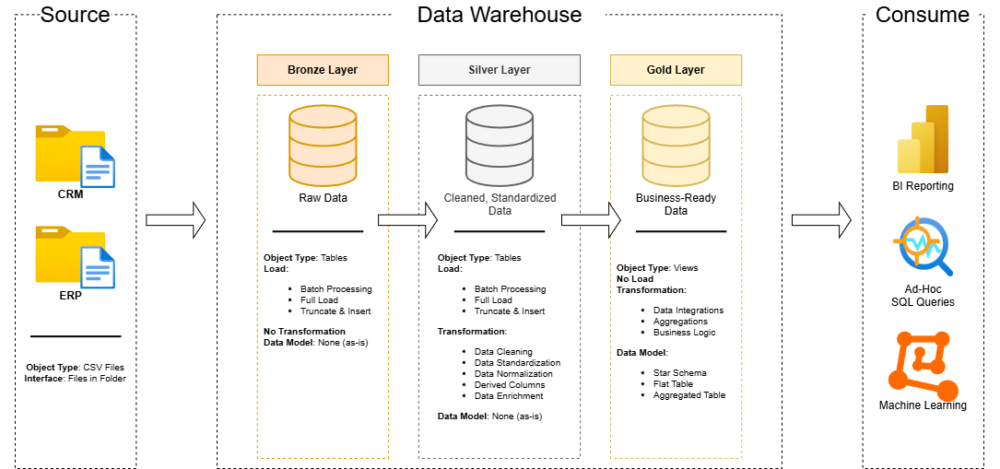
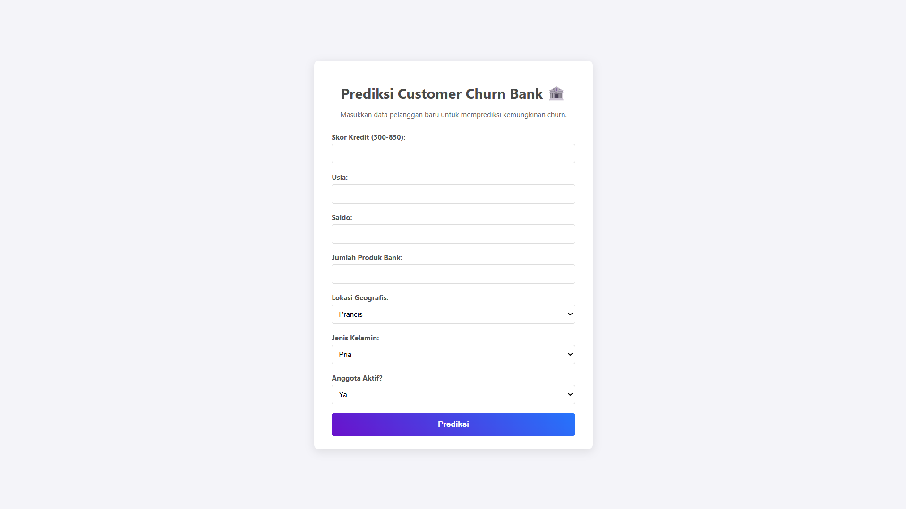
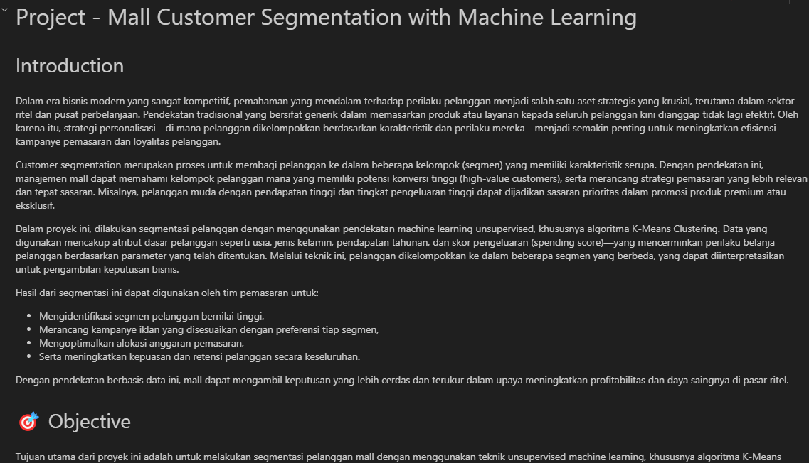

OVERVIEW / SYS_INFO
TURNING RAW DATA
INTO DECISIONS.
Lulusan Digital Business yang sangat analitis (IPK 3.86/4.00), memadukan keahlian analisis data yang kuat dengan ketajaman bisnis (business acumen). Mahir menggunakan Python, SQL, dan *BI tools* untuk mengekstrak *actionable insights* dan mengoptimalkan alur kerja.
Berpengalaman menerjemahkan kebutuhan klien menjadi cetak biru (blueprint) teknis, memfasilitasi siklus proyek dari awal hingga akhir untuk 10+ proyek IT enterprise. Memiliki rekam jejak dalam mendorong efisiensi operasional, termasuk sistem otomasi yang memangkas waktu pemrosesan hingga 75%.
10+
Enterprise Projects
75%
Process Time Reduced
3.86
GPA (Digital Business)
PROJECTS / DATA_VAULT

DATA ENGEnterprise SQL Data Warehouse
Membangun arsitektur Medallion dari nol untuk menganalisis jutaan baris data CRM & ERP. Menemukan insight strategis produk unggulan.

MACHINE LEARNINGCustomer Churn Predictor
Mendeteksi nasabah berisiko churn via model SVC. Dideploy secara live ke web app untuk digunakan oleh tim bisnis.

MACHINE LEARNINGMall Customer Segmentation
Unsupervised learning K-Means clustering untuk menemukan 5 segmen pelanggan tersembunyi demi optimasi ROI marketing.
SCROLL HORIZONTALLY TO EXPLORE MORE
EXPERIENCE / EXEC_LOG
| TIMEFRAME | ROLE & ORG | IMPACT / DESCRIPTION | DOCS |
|---|---|---|---|
| 2026 Jun - Aug |
Business Dev. ExecPT Accelist Lentera Indonesia |
Memfasilitasi siklus 10+ proyek IT untuk akun kunci (Toyota & Isuzu). Menerjemahkan kebutuhan bisnis menjadi blueprint IT. Menyusun estimasi biaya & Scope of Work (SoW) berbasis data alokasi sumber daya. | |
| 2025 Feb - Jul |
Digital & IT Infra InternPT MRT Jakarta (Perseroda) |
Menganalisis performa infrastruktur (TVM & MyMRTJ Lite) dengan Python. Membuat aplikasi Android untuk otomasi registrasi barang, memangkas waktu proses 75% untuk 2000+ item. Melakukan UI/UX Testing untuk onboarding penyewa. | |
| 2023 Mar - Aug |
IoT Product Leader (PKM-KC)Kemendikbudristek RI |
Mendapatkan pendanaan nasional (Top 12% dari 42.000+ proposal). Memimpin end-to-end development prototipe produk MVP IoT berbasis Design Thinking & UI/UX Figma. |
PIPELINES / AUTOMATION_SCRIPTS
INDO FINTECH RADAR
IN PROGRESSAutomated intelligence pipeline via n8n & Supabase. Menarik 4 API harian, mendeteksi anomali via Python Z-score, dan men-generate ringkasan AI via LLM.
FINTECH PULSE MONITOR
LIVESistem hands-free yang menarik data Kurs harian via API ke Google Sheets dan mendistribusikan digest otomatis ke Telegram Bot setiap pagi.